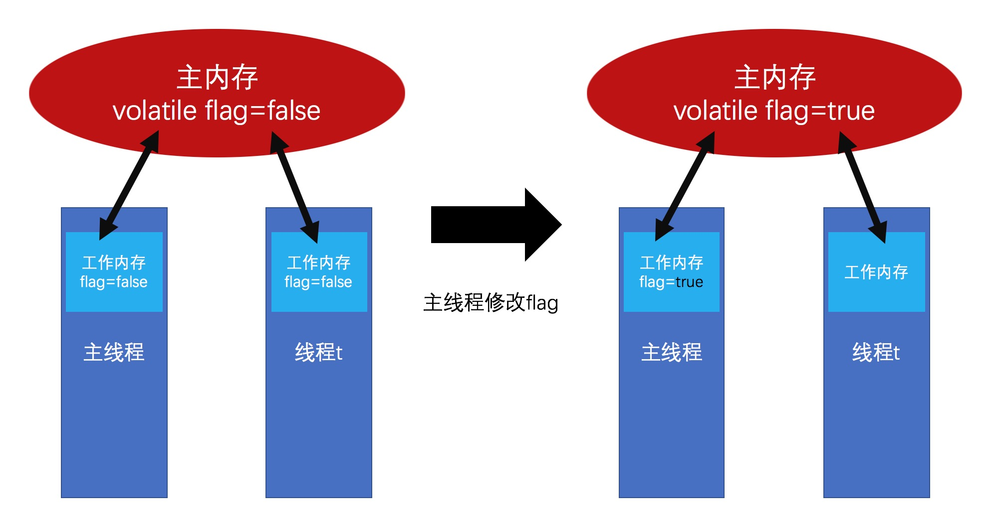
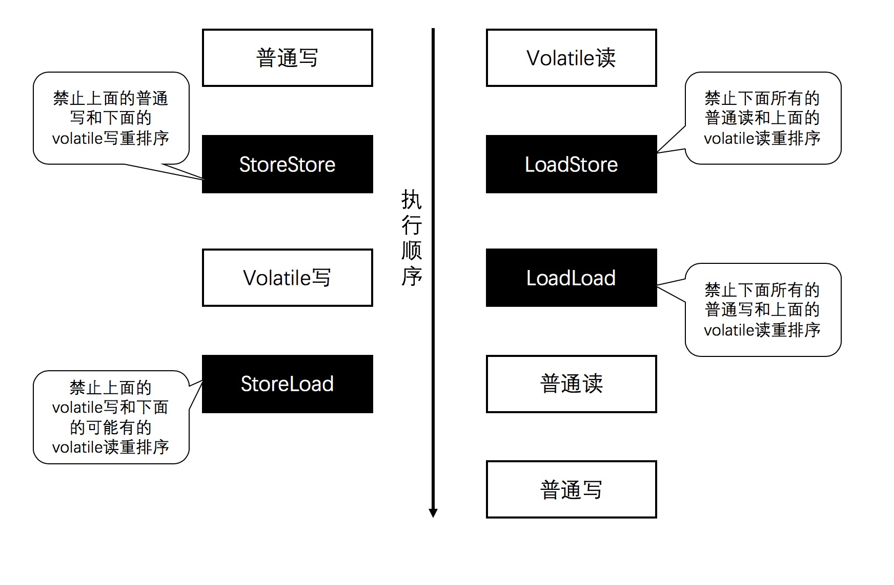

<!DOCTYPE html>


<html lang="zh-CN">


<head>
  <meta charset="utf-8" />
    
  <meta name="viewport" content="width=device-width, initial-scale=1, maximum-scale=1" />
  <title>
    volatile和CAS |  愿那颗星一直指引你
  </title>
  <meta name="generator" content="hexo-theme-ayer">
  
  <link rel="shortcut icon" href="/favicon.ico" />
  
  
<link rel="stylesheet" href="/dist/main.css">

  
<link rel="stylesheet" href="https://cdn.jsdelivr.net/gh/Shen-Yu/cdn/css/remixicon.min.css">

  
<link rel="stylesheet" href="/css/custom.css">

  
  
<script src="https://cdn.jsdelivr.net/npm/pace-js@1.0.2/pace.min.js"></script>

  
  

  

</head>

</html>

<body>
  <div id="app">
    <main class="content on">
      <section class="outer">
  <article id="post-volatile和CAS" class="article article-type-post" itemscope
  itemprop="blogPost" data-scroll-reveal>

  <div class="article-inner">
    
    <header class="article-header">
       
<h1 class="article-title sea-center" style="border-left:0" itemprop="name">
  volatile和CAS
</h1>
 

    </header>
    

    
    <div class="article-meta">
      <a href="/2020/06/16/volatile%E5%92%8CCAS/" class="article-date">
  <time datetime="2020-06-16T15:10:43.000Z" itemprop="datePublished">2020-06-16</time>
</a>
      
  <div class="article-category">
    <a class="article-category-link" href="/categories/Java%E5%B9%B6%E5%8F%91/">Java并发</a>
  </div>

      
      
<div class="word_count">
    <span class="post-time">
        <span class="post-meta-item-icon">
            <i class="ri-quill-pen-line"></i>
            <span class="post-meta-item-text"> 字数统计:</span>
            <span class="post-count">1.5k</span>
        </span>
    </span>

    <span class="post-time">
        &nbsp; | &nbsp;
        <span class="post-meta-item-icon">
            <i class="ri-book-open-line"></i>
            <span class="post-meta-item-text"> 阅读时长≈</span>
            <span class="post-count">5 分钟</span>
        </span>
    </span>
</div>

      
    </div>
    

    
    
    <div class="tocbot"></div>


    

    
    <div class="article-entry" itemprop="articleBody">
      
      

      
      <p>关于Java并发编程，volatile关键字和CAS操作都扮演着重要的角色。本文之所以把这两个放在一起讲，是因为两者的有机结合能实现锁的功能。volatile能保证内存可见性和防止重排序，CAS能保证操作的原子性（其实也能保证可见性），两者结合几乎拓展出了整个Java的并发包，Java中Lock的底层实现AQS所依赖的也正是volatile和CAS。</p>
<a id="more"></a>

<h1 id="volatile"><a href="#volatile" class="headerlink" title="volatile"></a>volatile</h1><p>volatile更像是轻量级的synchronized，它在多线程开发中保证了共享变量的“内存可见性”。如果volatile变量修饰符使用恰当的话，它比synchronized的使用和执行成本更低，因为它没有加锁解锁的开销。</p>
<h2 id="volatile的定义"><a href="#volatile的定义" class="headerlink" title="volatile的定义"></a>volatile的定义</h2><p>Java语言规范第3版中对volatile的定义如下：Java编程语言允许线程访问共享变量，为了确保共享变量能被准确和一致地更新，线程应该确保通过排他锁单独获得这个变量。Java语言提供了volatile，在某些情况下比锁要更加方便。如果一个字段被声明成volatile，Java内存模型能确保所有线程看到这个变量的值是一致的，即保证了内存可见性。</p>
<h2 id="volatile的底层实现"><a href="#volatile的底层实现" class="headerlink" title="volatile的底层实现"></a>volatile的底层实现</h2><p>如果想知道volatile是如何保证内存可见性的，必然需要了解volatile的底层实现是什么。我们可以通过工具获取JIT编译器生成的汇编指令来查看对volatile进行写操作时，CPU会做些什么。</p>
<p>在对有volatile修饰的共享变量进行写操作时，会在对应的汇编指令前加上Lock前缀。结合Java内存模型，我们可以这么理解：</p>
<ol>
<li>将当前工作内存中的共享变量（all）写回到主内存中去。</li>
<li>步骤1会使得其他线程内的工作内存失效，后续读取共享变量必须从主内存中读取。</li>
</ol>
<p></p>
<h2 id="volatile的内存语义"><a href="#volatile的内存语义" class="headerlink" title="volatile的内存语义"></a>volatile的内存语义</h2><p>在学习《Java并发编程实战》这本书的时候，里面有句话令我印象十分的深刻。大致意思上说的是，比起内存可见性，volatile更重要的地方在于它的内存语义，使得它具有了一些锁的性质。</p>
<p>volatile的语义主要是读和写，具体如下：</p>
<ul>
<li>volatile写：当写一个volatile变量时，JMM会把该线程对应的本地内存中的共享变量刷新到主内存。</li>
<li>volatile读：当读一个volatile变量时，JMM会把该线程对应的本地内存置为无效。线程接下来将从主内存中读取共享变量。</li>
</ul>
<h2 id="volatile内存语义的实现原理"><a href="#volatile内存语义的实现原理" class="headerlink" title="volatile内存语义的实现原理"></a>volatile内存语义的实现原理</h2><p>编译器或者处理器为了提高运行效率会对指令进行重排序。为了实现volatile内存语义，编译器在声称字节码时，会在指令序列中插入内存屏障来紧致特定类型对处理器重排序。简单来说有下面四种：</p>
<ol>
<li>在每个volatile写操作的前面插入一个StoreStore屏障。</li>
<li>在每个volatile写操作的后面插入一个StoreLoad屏障。</li>
<li>在每个volatile读操作的后面插入一个LoadLoad屏障。</li>
<li>在每个volatile读操作的后面插入一个LoadStore屏障。</li>
</ol>
<p>可能看图来说会比较直观一点，请看下图</p>
<p></p>
<p>这样子可能会好理解吧。正因为禁止了部分的重排序，加上内存可见性的保证，所以保证了volatile类似于锁的内存语义。</p>
<h1 id="CAS"><a href="#CAS" class="headerlink" title="CAS"></a>CAS</h1><p>CAS指的是Compare And Swap（在Java中调用的函数应该为CompareAndSet），顾名思义是比较并替换的意思。CAS实际上是乐观锁的一种实现，不需要对资源加锁，当我们需要更改变量时，需要一个旧的预期值A,主内存的值是V，要修改的值B，当且仅当A==V的时候，V的值才会被修改成B，而且是一个非阻塞性的原子操作。一般而言，Java中大部分都是通过循环和CAS配合来实现修改变量的。</p>
<h2 id="CAS的实现原理"><a href="#CAS的实现原理" class="headerlink" title="CAS的实现原理"></a>CAS的实现原理</h2><p>我们可以追踪源码来看看CAS底层是如何实现的，以AtmoicInteger为例，其底层最终调用的方法为</p>
<figure class="highlight java"><table><tr><td class="gutter"><pre><span class="line">1</span><br><span class="line">2</span><br><span class="line">3</span><br><span class="line">4</span><br></pre></td><td class="code"><pre><span class="line"><span class="meta">@HotSpotIntrinsicCandidate</span></span><br><span class="line"><span class="function"><span class="keyword">public</span> <span class="keyword">final</span> <span class="keyword">native</span> <span class="keyword">boolean</span> <span class="title">compareAndSetInt</span><span class="params">(Object o, <span class="keyword">long</span> offset,</span></span></span><br><span class="line"><span class="function"><span class="params">                                             <span class="keyword">int</span> expected,</span></span></span><br><span class="line"><span class="function"><span class="params">                                             <span class="keyword">int</span> x)</span></span>;</span><br></pre></td></tr></table></figure>
<p>可以看到这是一个native方法，也就是说Java中的CAS底层是通过JNI去调用C代码操作OS来获取的一个原子操作.</p>
<h2 id="CAS的三大问题"><a href="#CAS的三大问题" class="headerlink" title="CAS的三大问题"></a>CAS的三大问题</h2><p>CAS虽然很高效地解决了原子操作，但是CAS仍然存在三大问题。ABA问题，循环时间长开销大，以及只能保证一个共享变量的原子操作。</p>
<ul>
<li>ABA问题：在CAS操作中，会出现ABA问题。就是如果V的值先由A变成B，再由B变成A，那么仍然认为是发生了变化，并需要重新执行算法中的步骤。有简单的解决方案：不是更新某个引用的值，而是更新两个值，包括一个引用和一个版本号，即使这个值由A变为B，然后为变为A，版本号也是不同的。</li>
<li>循环时间长开销大：CAS配合循环使用，就是不断重复通过执行CAS指令，直到成功为止，当长时间进行CAS的自旋的时候，会引起CPU资源的大量消耗。</li>
<li>只能保证一个共享变量的原子操作：当只有一个共享变量进行CAS操作的时候，就可以进行自旋的CAS去进行原子操作，但是对多个共享变量进行CAS操作的时候，循环CAS无法保证原子性。这时候我们可以取巧将这两个变量放在一个对象里面</li>
</ul>
<h1 id="小结"><a href="#小结" class="headerlink" title="小结"></a>小结</h1><p>volatile与CAS的配合我们在源码中会经常遇到，比如AQS、原子类等，所以深入了解这两个还是十分有必要的。</p>

      
      <!-- reward -->
      
    </div>
    
    
      <!-- copyright -->
      
        <div class="declare">
          <ul class="post-copyright">
            <li>
              <i class="ri-copyright-line"></i>
              <strong>版权声明： </strong>
              本博客所有文章除特别声明外，著作权归作者所有。转载请注明出处！
            </li>
          </ul>
        </div>
        
    <footer class="article-footer">
      
          
<div class="share-btn">
      <span class="share-sns share-outer">
        <i class="ri-share-forward-line"></i>
        分享
      </span>
      <div class="share-wrap">
        <i class="arrow"></i>
        <div class="share-icons">
          
          <a class="weibo share-sns" href="javascript:;" data-type="weibo">
            <i class="ri-weibo-fill"></i>
          </a>
          <a class="weixin share-sns wxFab" href="javascript:;" data-type="weixin">
            <i class="ri-wechat-fill"></i>
          </a>
          <a class="qq share-sns" href="javascript:;" data-type="qq">
            <i class="ri-qq-fill"></i>
          </a>
          <a class="douban share-sns" href="javascript:;" data-type="douban">
            <i class="ri-douban-line"></i>
          </a>
          <!-- <a class="qzone share-sns" href="javascript:;" data-type="qzone">
            <i class="icon icon-qzone"></i>
          </a> -->
          
          <a class="facebook share-sns" href="javascript:;" data-type="facebook">
            <i class="ri-facebook-circle-fill"></i>
          </a>
          <a class="twitter share-sns" href="javascript:;" data-type="twitter">
            <i class="ri-twitter-fill"></i>
          </a>
          <a class="google share-sns" href="javascript:;" data-type="google">
            <i class="ri-google-fill"></i>
          </a>
        </div>
      </div>
</div>

<div class="wx-share-modal">
    <a class="modal-close" href="javascript:;"><i class="ri-close-circle-line"></i></a>
    <p>扫一扫，分享到微信</p>
    <div class="wx-qrcode">
      
    </div>
</div>

<div id="share-mask"></div>
      
      
  <ul class="article-tag-list" itemprop="keywords"><li class="article-tag-list-item"><a class="article-tag-list-link" href="/tags/Java%E5%B9%B6%E5%8F%91/" rel="tag">Java并发</a></li></ul>


    </footer>

  </div>

  
  
  <nav class="article-nav">
    
      <a href="/2020/06/20/Java%E4%B8%AD%E7%9A%84%E5%8E%9F%E5%AD%90%E5%9F%BA%E6%9C%AC%E7%B1%BB%E5%9E%8B%E7%B1%BB/" class="article-nav-link">
        <strong class="article-nav-caption">上一篇</strong>
        <div class="article-nav-title">
          
            Java中的原子基本类型类
          
        </div>
      </a>
    
    
      <a href="/2020/06/10/Java%E4%B8%AD%E7%9A%84%E9%94%81-synchronized/" class="article-nav-link">
        <strong class="article-nav-caption">下一篇</strong>
        <div class="article-nav-title">Java中的锁-synchronized</div>
      </a>
    
  </nav>


  

  
  
<!-- valine评论 -->
<div id="vcomments-box">
    <div id="vcomments">
    </div>
</div>
<script src="//cdn1.lncld.net/static/js/3.0.4/av-min.js"></script>
<script src='https://cdn.jsdelivr.net/npm/valine@1.3.10/dist/Valine.min.js'></script>
<script>
    new Valine({
        el: '#vcomments',
        app_id: '',
        app_key: '',
        path: window.location.pathname,
        notify: 'false',
        verify: 'false',
        avatar: 'monsterid',
        placeholder: '给我的文章加点评论吧~',
        recordIP: true
    });
    const infoEle = document.querySelector('#vcomments .info');
    if (infoEle && infoEle.childNodes && infoEle.childNodes.length > 0) {
        infoEle.childNodes.forEach(function (item) {
            item.parentNode.removeChild(item);
        });
    }
</script>
<style>
    #vcomments-box {
        padding: 5px 30px;
    }

    @media screen and (max-width: 800px) {
        #vcomments-box {
            padding: 5px 0px;
        }
    }

    #vcomments-box #vcomments {
        background-color: #fff;
    }

    .v .vlist .vcard .vh {
        padding-right: 20px;
    }

    .v .vlist .vcard {
        padding-left: 10px;
    }
</style>

  

  
  
  
  
  

</article>
</section>
      <footer class="footer">
  <div class="outer">
    <ul>
      <li>
        Copyrights &copy;
        2020
        <i class="ri-heart-fill heart_icon"></i> Hanyu
      </li>
    </ul>
    <ul>
      <li>
        
      </li>
    </ul>
    <ul>
      <li>
        
        
        <span>
  <span><i class="ri-user-3-fill"></i>访问人数:<span id="busuanzi_value_site_uv"></span></s>
  <span class="division">|</span>
  <span><i class="ri-eye-fill"></i>浏览次数:<span id="busuanzi_value_page_pv"></span></span>
</span>
        
      </li>
    </ul>
    <ul>
      
    </ul>
    <ul>
      <li>
        <!-- cnzz统计 -->
        
        <script type="text/javascript" src='https://s9.cnzz.com/z_stat.php?id=1278069914&amp;web_id=1278069914'></script>
        
      </li>
    </ul>
  </div>
</footer>
      <div class="float_btns">
        <div class="totop" id="totop">
  <i class="ri-arrow-up-line"></i>
</div>

      </div>
    </main>
    <aside class="sidebar on">
      <button class="navbar-toggle"></button>
<nav class="navbar">
  
  <div class="logo">
    <a href="/"></a>
  </div>
  
  <ul class="nav nav-main">
    
    <li class="nav-item">
      <a class="nav-item-link" href="/">主页</a>
    </li>
    
    <li class="nav-item">
      <a class="nav-item-link" href="/archives">归档</a>
    </li>
    
    <li class="nav-item">
      <a class="nav-item-link" href="/categories">分类</a>
    </li>
    
    <li class="nav-item">
      <a class="nav-item-link" href="/tags">标签</a>
    </li>
    
    <li class="nav-item">
      <a class="nav-item-link" href="/about">关于我</a>
    </li>
    
  </ul>
</nav>
<nav class="navbar navbar-bottom">
  <ul class="nav">
    <li class="nav-item">
      
      <a class="nav-item-link nav-item-search"  title="搜索">
        <i class="ri-search-line"></i>
      </a>
      
      
    </li>
  </ul>
</nav>
<div class="search-form-wrap">
  <div class="local-search local-search-plugin">
  <input type="search" id="local-search-input" class="local-search-input" placeholder="Search...">
  <div id="local-search-result" class="local-search-result"></div>
</div>
</div>
    </aside>
    <script>
      if (window.matchMedia("(max-width: 768px)").matches) {
        document.querySelector('.content').classList.remove('on');
        document.querySelector('.sidebar').classList.remove('on');
      }
    </script>
    <div id="mask"></div>

<!-- #reward -->
<div id="reward">
  <span class="close"><i class="ri-close-line"></i></span>
  <p class="reward-p"><i class="ri-cup-line"></i>请我喝杯咖啡吧~</p>
  <div class="reward-box">
    
    <div class="reward-item">
      
      <span class="reward-type">支付宝</span>
    </div>
    
    
    <div class="reward-item">
      
      <span class="reward-type">微信</span>
    </div>
    
  </div>
</div>
    
<script src="/js/jquery-2.0.3.min.js"></script>


<script src="/js/lazyload.min.js"></script>

<!-- Subtitle -->

<script>
  try {
    var typed = new Typed("#subtitle", {
      strings: ['面朝大海，春暖花开', '愿你一生努力，一生被爱', '想要的都拥有，得不到的都释怀'],
      startDelay: 0,
      typeSpeed: 200,
      loop: true,
      backSpeed: 100,
      showCursor: true
    });
  } catch (err) {
    console.log(err)
  }
</script>

<!-- Tocbot -->


<script src="/js/tocbot.min.js"></script>

<script>
  tocbot.init({
    tocSelector: '.tocbot',
    contentSelector: '.article-entry',
    headingSelector: 'h1, h2, h3, h4, h5, h6',
    hasInnerContainers: true,
    scrollSmooth: true,
    scrollContainer: 'main',
    positionFixedSelector: '.tocbot',
    positionFixedClass: 'is-position-fixed',
    fixedSidebarOffset: 'auto'
  });
</script>

<script src="https://cdn.jsdelivr.net/npm/jquery-modal@0.9.2/jquery.modal.min.js"></script>
<link rel="stylesheet" href="https://cdn.jsdelivr.net/npm/jquery-modal@0.9.2/jquery.modal.min.css">
<script src="https://cdn.jsdelivr.net/npm/justifiedGallery@3.7.0/dist/js/jquery.justifiedGallery.min.js"></script>

<script src="/dist/main.js"></script>

<!-- ImageViewer -->

<!-- Root element of PhotoSwipe. Must have class pswp. -->
<div class="pswp" tabindex="-1" role="dialog" aria-hidden="true">

    <!-- Background of PhotoSwipe. 
         It's a separate element as animating opacity is faster than rgba(). -->
    <div class="pswp__bg"></div>

    <!-- Slides wrapper with overflow:hidden. -->
    <div class="pswp__scroll-wrap">

        <!-- Container that holds slides. 
            PhotoSwipe keeps only 3 of them in the DOM to save memory.
            Don't modify these 3 pswp__item elements, data is added later on. -->
        <div class="pswp__container">
            <div class="pswp__item"></div>
            <div class="pswp__item"></div>
            <div class="pswp__item"></div>
        </div>

        <!-- Default (PhotoSwipeUI_Default) interface on top of sliding area. Can be changed. -->
        <div class="pswp__ui pswp__ui--hidden">

            <div class="pswp__top-bar">

                <!--  Controls are self-explanatory. Order can be changed. -->

                <div class="pswp__counter"></div>

                <button class="pswp__button pswp__button--close" title="Close (Esc)"></button>

                <button class="pswp__button pswp__button--share" style="display:none" title="Share"></button>

                <button class="pswp__button pswp__button--fs" title="Toggle fullscreen"></button>

                <button class="pswp__button pswp__button--zoom" title="Zoom in/out"></button>

                <!-- Preloader demo http://codepen.io/dimsemenov/pen/yyBWoR -->
                <!-- element will get class pswp__preloader--active when preloader is running -->
                <div class="pswp__preloader">
                    <div class="pswp__preloader__icn">
                        <div class="pswp__preloader__cut">
                            <div class="pswp__preloader__donut"></div>
                        </div>
                    </div>
                </div>
            </div>

            <div class="pswp__share-modal pswp__share-modal--hidden pswp__single-tap">
                <div class="pswp__share-tooltip"></div>
            </div>

            <button class="pswp__button pswp__button--arrow--left" title="Previous (arrow left)">
            </button>

            <button class="pswp__button pswp__button--arrow--right" title="Next (arrow right)">
            </button>

            <div class="pswp__caption">
                <div class="pswp__caption__center"></div>
            </div>

        </div>

    </div>

</div>

<link rel="stylesheet" href="https://cdn.jsdelivr.net/npm/photoswipe@4.1.3/dist/photoswipe.min.css">
<link rel="stylesheet" href="https://cdn.jsdelivr.net/npm/photoswipe@4.1.3/dist/default-skin/default-skin.min.css">
<script src="https://cdn.jsdelivr.net/npm/photoswipe@4.1.3/dist/photoswipe.min.js"></script>
<script src="https://cdn.jsdelivr.net/npm/photoswipe@4.1.3/dist/photoswipe-ui-default.min.js"></script>

<script>
    function viewer_init() {
        let pswpElement = document.querySelectorAll('.pswp')[0];
        let $imgArr = document.querySelectorAll(('.article-entry img:not(.reward-img)'))

        $imgArr.forEach(($em, i) => {
            $em.onclick = () => {
                // slider展开状态
                // todo: 这样不好，后面改成状态
                if (document.querySelector('.left-col.show')) return
                let items = []
                $imgArr.forEach(($em2, i2) => {
                    let img = $em2.getAttribute('data-idx', i2)
                    let src = $em2.getAttribute('data-target') || $em2.getAttribute('src')
                    let title = $em2.getAttribute('alt')
                    // 获得原图尺寸
                    const image = new Image()
                    image.src = src
                    items.push({
                        src: src,
                        w: image.width || $em2.width,
                        h: image.height || $em2.height,
                        title: title
                    })
                })
                var gallery = new PhotoSwipe(pswpElement, PhotoSwipeUI_Default, items, {
                    index: parseInt(i)
                });
                gallery.init()
            }
        })
    }
    viewer_init()
</script>

<!-- MathJax -->

<!-- Katex -->

<!-- busuanzi  -->


<script src="/js/busuanzi-2.3.pure.min.js"></script>


<!-- ClickLove -->

<!-- CodeCopy -->


<link rel="stylesheet" href="/css/clipboard.css">

<script src="https://cdn.jsdelivr.net/npm/clipboard@2/dist/clipboard.min.js"></script>
<script>
  function wait(callback, seconds) {
    var timelag = null;
    timelag = window.setTimeout(callback, seconds);
  }
  !function (e, t, a) {
    var initCopyCode = function(){
      var copyHtml = '';
      copyHtml += '<button class="btn-copy" data-clipboard-snippet="">';
      copyHtml += '<i class="ri-file-copy-2-line"></i><span>COPY</span>';
      copyHtml += '</button>';
      $(".highlight .code pre").before(copyHtml);
      $(".article pre code").before(copyHtml);
      var clipboard = new ClipboardJS('.btn-copy', {
        target: function(trigger) {
          return trigger.nextElementSibling;
        }
      });
      clipboard.on('success', function(e) {
        let $btn = $(e.trigger);
        $btn.addClass('copied');
        let $icon = $($btn.find('i'));
        $icon.removeClass('ri-file-copy-2-line');
        $icon.addClass('ri-checkbox-circle-line');
        let $span = $($btn.find('span'));
        $span[0].innerText = 'COPIED';
        
        wait(function () { // 等待两秒钟后恢复
          $icon.removeClass('ri-checkbox-circle-line');
          $icon.addClass('ri-file-copy-2-line');
          $span[0].innerText = 'COPY';
        }, 2000);
      });
      clipboard.on('error', function(e) {
        e.clearSelection();
        let $btn = $(e.trigger);
        $btn.addClass('copy-failed');
        let $icon = $($btn.find('i'));
        $icon.removeClass('ri-file-copy-2-line');
        $icon.addClass('ri-time-line');
        let $span = $($btn.find('span'));
        $span[0].innerText = 'COPY FAILED';
        
        wait(function () { // 等待两秒钟后恢复
          $icon.removeClass('ri-time-line');
          $icon.addClass('ri-file-copy-2-line');
          $span[0].innerText = 'COPY';
        }, 2000);
      });
    }
    initCopyCode();
  }(window, document);
</script>


    
  </div>
</body>

</html>